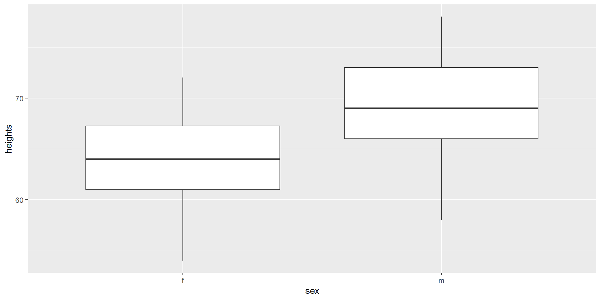
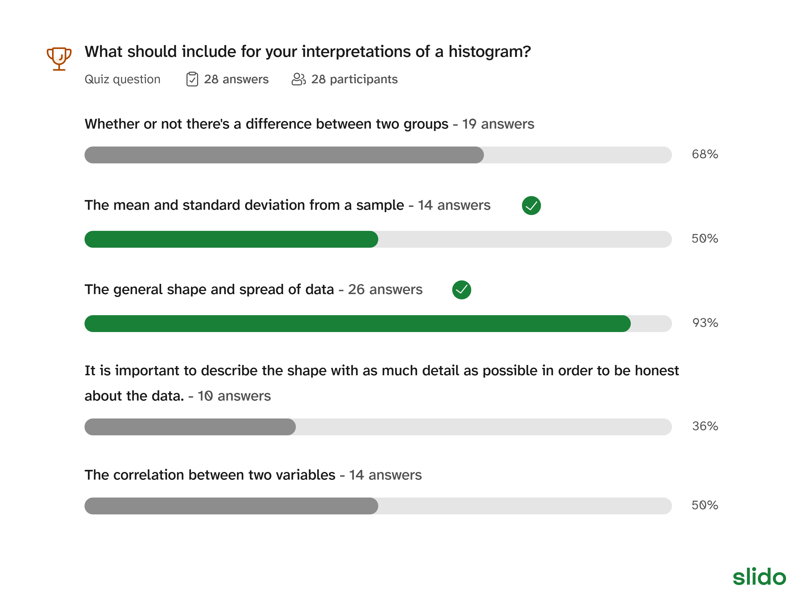

# A tibble: 6 × 2
heights sex
<dbl> <chr>
1 70 f
2 68 f
3 65 f
4 59 f
5 70 f
6 63 f Descriptive statistics
- What is descriptive statistics?
- Descriptive statistics describes larger trends in the data, without making claims about the true population values.
Compare the following to the version with
mutate(). How do they differ?- Note: this is an incomplete summary table. Please read more below!
Complete summary table should fill in the following
- SD is standard deviation and SE is standard error.
- The function to calculate the sample size is just
n() - The function to calculate SD is
sd(height) - To calculate SE, that is SD/sqrt(SampleSize)
Output from complete code:
# A tibble: 2 × 5
sex SampleSize Mean SD SE
<chr> <int> <dbl> <dbl> <dbl>
1 f 200 64.2 4.16 0.294
2 m 200 69.5 4.70 0.332- Use
facet_warp(~sex)to create a separate panel for each sex.

- For boxplots, you need both the x and y variable in aesthetics.
- What should the x and y variables be?

